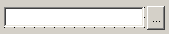

| Home | All Classes | Main Classes | Annotated | Grouped Classes | Functions |
[Prev: Subclassing and Dynamic Dialogs] [Home] [Next: Creating Database Applications]
Custom widgets are created in code. They may comprise a combination of existing widgets but with additional functionality, slots and signals, or they may be written from scratch, or a mixture of both.
Qt Designer provides two mechanisms for incorporating custom widgets:
The original method involves little more than completing a dialog box. Widgets incorporated this way appear as flat pixmaps when added to a form in Qt Designer, even in preview mode. They only appear in their true form at runtime. We'll explain how to create custom widgets using the original approach in "Simple Custom Widgets".
The new method involves embedding the widgets in a plugin. Widgets that are incorporated through plugins appear in their true form in Qt Designer, both when laying out the form and in preview mode. This approach provides more power and flexibility than the original method and is covered in Creating Custom Widgets with Plugins.
There are two stages to creating a custom widget. Firstly we must create a class that defines the widget, and secondly we must incorporate the widget into Qt Designer. Creating the widget has to be done whether we are creating a simple custom widget or a plugin, but for simple custom widgets the incorporation into Qt Designer is very easy.
We will create a VCR style widget comprising four buttons, rewind, play, next and stop. The widget will emit signals according to which button is clicked.
A custom widget may consist of one or more standard widgets placed together in a particular combination, or may be written from scratch. We will combine some QPushButton widgets to form the basis of our custom widget.
We'll look at the header file, qt/tools/designer/examples/vcr/vcr.h first.
#include <qwidget.h>
class Vcr : public QWidget
{
Q_OBJECT
public:
Vcr( QWidget *parent = 0, const char *name = 0 );
~Vcr() {}
signals:
void rewind();
void play();
void next();
void stop();
};
We include qwidget.h since we'll be deriving our custom widget from QWidget. We declare a constructor where the widget will be created and the four signals we want our widget to emit.
Note: Since we're using signals we must also include the Q_OBJECT macro. This macro also ensures that information about the class is available via the Meta Object System and ensures that Qt Designer will display the correct information about the widget.
The implementation is straightforward. The only function we implement is the constructor. The rest of the file consists of include statements and embedded .xpm images.
Vcr::Vcr( QWidget *parent, const char *name )
: QWidget( parent, name )
{
QHBoxLayout *layout = new QHBoxLayout( this );
layout->setMargin( 0 );
QPushButton *rewind = new QPushButton( QPixmap( rewind_xpm ), 0, this, "vcr_rewind" );
layout->addWidget( rewind );
We create a QHBoxLayout in which we'll place the buttons. We've only shown the rewind button in the code above since all the others are identical except for the names of the buttons, pixmaps and signals. For each of the buttons we require we call the QPushButton constructor passing it the appropriate embedded pixmap. We then add it to the layout. Finally we connect the button's clicked() signal to the appropriate signal. Since the clicked() signals aren't specific to our widget we want to emit signals that reflect the widget's use. The rewind(), play(), etc. signals are meaningful in the context of our widget so we propagate each button's clicked() signal to the appropriate widget-specific signal.
The implementation is complete, but to make sure that our widget compiles and runs we'll create a tiny test harness. The test harness will require two files, a .pro project file and a main.cpp. The qt/tools/designer/examples/vcr/vcr.pro project file:
TEMPLATE = app LANGUAGE = C++ TARGET = vcr CONFIG += qt warn_on release SOURCES += vcr.cpp main.cpp HEADERS += vcr.h DBFILE = vcr.db
The qt/tools/designer/examples/vcr/main.cpp file is also brief:
#include <qapplication.h>
#include "vcr.h"
int main( int argc, char ** argv )
{
QApplication app( argc, argv );
Vcr *vcr = new Vcr;
vcr->show();
return app.exec();
}
Once we're satisfied that the custom widget compiles and runs we are ready to incorporate it into Qt Designer.
In Base-class Templates the creation of a container custom widget is described.
Click Tools|Custom|Edit Custom Widgets to invoke the Edit Custom Widgets dialog.
Click New Widget so that we are ready to add our new widget.
Change the Class name from 'MyCustomWidget' to 'Vcr'.
Click the ellipsis (...) button to the right of the Headerfile line edit to invoke the file Open dialog. Locate vcr.h, select it, and click Open. It will now appear as the header file.
If you have a pixmap that you want to use to identify your widget on the toolbar click the ellipsis button to the right of Pixmap property. (The ellipsis button appears when you click in the Value part of the Properties list by a pixmap or iconSet property.)
In our example we have the file qt/tools/designer/examples/vcr/play.xpm which we'll use for this purpose.
Since we know the minimum sensible size for our widget we'll put these values into the Size Hint spin boxes. Enter a width of 80 (in the left hand spin box), and a height of 20 (in the right hand spin box).
The remaining items to be completed will depend on the characteristics of the widget you've created. If, for example, your widget can be used to contain other widgets you'd check the Container Widget checkbox. In the case of our Vcr example the only items we need to add are its signals.
Click the Signals tab. Click the New Signal button and type in the signal name 'rewind()'. Click New Signal again and this time type in 'play()'. Add the 'next()' and 'stop()' signals in the same way.
Since our example hasn't any slots or properties we've finished and can click Close. A new icon will appear in Qt Designer's toolbars which represents the new widget. If you create a new form you can add Vcr widgets and connect the Vcr's signals to your slots.
Incorporating custom widgets that have their own slots and properties is achieved in a similar way to adding signals. All the required information is in our custom widget's header file.
This section will show you how to write a custom widget and how to embed the custom widget into a plugin. There are no restrictions or special considerations that must be taken into account when creating a widget that is destined to become a plugin. If you are an experienced Qt programmer you can safely skip the section on creating a custom widget and go directly to Creating a Plugin.
Be aware that if you use the plugin approach to custom widgets, the plugin needs to be available not only to Qt Designer but also to uic at compile-time.
A custom widget is often a specialization (subclass) of another widget or a combination of widgets working together or a blend of both these approaches. If you simply want a collection of widgets in a particular configuration it is easiest to create them, select them as a group, and copy and paste them as required within Qt Designer. Custom widgets are generally created when you need to add new functionality to existing widgets or groups of widgets.
We have two recommendations that you should consider when creating a custom widget for a plugin:
Using Qt's property system will provide Qt Designer users with a direct means of configuring the widget through the property editor. (See the Qt Properties documentation.)
Consider making your widget's public 'set' functions into public slots so that you can perform signal-slot connections with the widget in Qt Designer.
In the course of this chapter we will create a simple but useful widget, 'FileChooser', which we'll later make available in Qt Designer as a plugin. In practice most custom widgets are created to add functionality rather than to compose widgets, so we will create our widget in code rather than using Qt Designer to reflect this approach. FileChooser consists of a QLineEdit and a QPushButton. The QLineEdit is used to hold a file or directory name, the QPushButton is used to launch a file dialog through which the user can choose a file or directory.

The FileChooser Custom Widget
If you've followed the manual up to this point you may well be able to create this custom widget yourself. If you're confident that you can make your own version of the widget, or have another widget that you want to turn into a plugin, skip ahead to Creating a Plugin. If you prefer to read how we created the widget then read on.
We will work step-by-step through the widget's header file, qt/tools/designer/examples/filechooser/widget/filechooser.h.
#include <qwidget.h>
#include <qwidgetplugin.h>
class QLineEdit;
class QPushButton;
Our widget will be derived from QWidget so we include the qwidget.h header file. We also forward declare the two classes that our widget will be built from.
We include the Q_OBJECT macro since this is required for classes that declare signals or slots. The Q_ENUMS declaration is used to register the Mode enumeration. Our widget has two properties, mode, to store whether the user should select a File or a Directory and fileName which stores the file or directory they chose.
class QT_WIDGET_PLUGIN_EXPORT FileChooser : public QWidget
{
Q_OBJECT
Q_ENUMS( Mode )
Q_PROPERTY( Mode mode READ mode WRITE setMode )
Q_PROPERTY( QString fileName READ fileName WRITE setFileName )
public:
FileChooser( QWidget *parent = 0, const char *name = 0);
enum Mode { File, Directory };
QString fileName() const;
Mode mode() const;
The constructor is declared in the standard way for widgets. We declare two public functions, fileName() to return the filename, and mode() to return the mode.
public slots:
void setFileName( const QString &fn );
void setMode( Mode m );
signals:
void fileNameChanged( const QString & );
private slots:
void chooseFile();
The two 'set' functions are declared as public slots. setFileName() and setMode() set the filename and mode respectively. We declare a single signal, fileNameChanged(). The private slot, chooseFile() is called by the widget itself when its button is clicked.
private:
QLineEdit *lineEdit;
QPushButton *button;
Mode md;
};
A pointer to QLineEdit and QPushButton, as well as a Mode variable are held as private data.
We will work step-by-step through the implementation which is in qt/tools/designer/examples/filechooser/widget/filechooser.cpp.
FileChooser::FileChooser( QWidget *parent, const char *name )
: QWidget( parent, name ), md( File )
{
The constructor passes the parent and name to its superclass, QWidget, and also initializes the private mode data, md, to File mode.
QHBoxLayout *layout = new QHBoxLayout( this );
layout->setMargin( 0 );
lineEdit = new QLineEdit( this, "filechooser_lineedit" );
layout->addWidget( lineEdit );
We begin by creating a horizontal box layout (QHBoxLayout) and add a QLineEdit and a QPushButton to it.
connect( lineEdit, SIGNAL( textChanged( const QString & ) ),
this, SIGNAL( fileNameChanged( const QString & ) ) );
button = new QPushButton( "...", this, "filechooser_button" );
button->setFixedWidth( button->fontMetrics().width( " ... " ) );
layout->addWidget( button );
connect( button, SIGNAL( clicked() ),
this, SLOT( chooseFile() ) );
We connect the lineEdit's textChanged() signal to the custom widget's fileNameChanged() signal. This ensures that if the user changes the text in the QLineEdit this fact will be propagated via the custom widget's own signal. The button's clicked() signal is connected to the custom widget's chooseFile() slot which invokes the appropriate dialog for the user to choose their file or directory.
setFocusProxy( lineEdit );
}
We set the lineEdit as the focus proxy for our custom widget. This means that when the widget is given focus the focus actually goes to the lineEdit.
void FileChooser::setFileName( const QString &fn )
{
lineEdit->setText( fn );
}
QString FileChooser::fileName() const
{
return lineEdit->text();
}
The setFileName() function sets the filename in the QLineEdit, and the fileName() function returns the filename from the QLineEdit. The setMode() and mode() functions (not shown) are similarly set and return the given mode.
void FileChooser::chooseFile()
{
QString fn;
if ( mode() == File )
fn = QFileDialog::getOpenFileName( lineEdit->text(), QString::null, this );
else
fn = QFileDialog::getExistingDirectory( lineEdit->text(),this );
if ( !fn.isEmpty() ) {
lineEdit->setText( fn );
emit fileNameChanged( fn );
}
}
When chooseFile() is called it presents the user with a file or directory dialog depending on the mode. If the user chooses a file or directory the QLineEdit is updated with the chosen file or directory and the fileNameChanged() signal is emitted.
Although these two files complete the implementation of the FileChooser widget it is good practice to write a test harness to check that the widget behaves as expected before attempting to put it into a plugin.
We present a rudimentary test harness which will allow us to run our custom widget. The test harness requires two files, a main.cpp to contain the FileChooser, and a .pro file to create the Makefile from. Here is qt/tools/designer/examples/filechooser/widget/main.cpp:
#include <qapplication.h>
#include "filechooser.h"
int main( int argc, char ** argv )
{
QApplication a( argc, argv );
FileChooser *fc = new FileChooser;
fc->show();
return a.exec();
}
And here is qt/tools/designer/examples/filechooser/widget/filechooser.pro
TEMPLATE = app LANGUAGE = C++ TARGET = filechooser SOURCES += filechooser.cpp main.cpp HEADERS += filechooser.h CONFIG += qt warn_on release DBFILE = filechooser.db DEFINES += FILECHOOSER_IS_WIDGET
We can create the makefile using qmake: qmake -o Makefile filechooser.pro, then we can make and run the harness to test our new widget. Once we're satisfied that the custom widget is robust and has the behaviour we require we can embed it into a plugin.
Qt Plugins can be used to provide self-contained software components for Qt applications. Qt currently supports the creation of five kinds of plugins: codecs, image formats, database drivers, styles and custom widgets. In this section we will explain how to convert our filechooser custom widget into a Qt Designer custom widget plugin.
A Qt Designer custom widget plugin is always derived from QWidgetPlugin. The amout of code that needs to be written is minimal.
To make your own plugin it is probably easiest to start by copying our example plugin.h and plugin.cpp files and changing 'CustomWidgetPlugin' to the name you wish to use for your widget plugin implementation class. Below we provide an introduction to the header file although it needs no changes beyond class renaming. The implementation file requires simple changes, mostly more class renaming; we will review each function in turn and explain what you need to do.
We have called our header file plugin.h and we've called our plugin class CustomWidgetPlugin since we will be using our plugin class to wrap our custom widgets. We present the entire header file to give you an impression of the scope of the implementation required. Most of the functions require just a few lines of code.
#include <qwidgetplugin.h>
class CustomWidgetPlugin : public QWidgetPlugin
{
public:
CustomWidgetPlugin();
QStringList keys() const;
QWidget* create( const QString &classname, QWidget* parent = 0, const char* name = 0 );
QString group( const QString& ) const;
QIconSet iconSet( const QString& ) const;
QString includeFile( const QString& ) const;
QString toolTip( const QString& ) const;
QString whatsThis( const QString& ) const;
bool isContainer( const QString& ) const;
};
From qt/tools/designer/examples/filechooser/plugin/plugin.h
Create your own plugin .cpp file by copying our plugin.cpp file and changing all occurrences of 'CustomWidgetPlugin' to the name you wish to use for your widget plugin implementation. Most of the other changes are simply replacing the name of our custom control, 'FileChooser', with the name of your custom control. You may need to add extra else if clauses if you have more than one custom control in your plugin implementation.
We'll now look at the constructor.
CustomWidgetPlugin::CustomWidgetPlugin()
{
}
The constructor does not have to do anything. Simply copy ours with the class name you wish to use for your widget plugin implementation.
No destructor is necessary.
The keys function.
QStringList CustomWidgetPlugin::keys() const
{
QStringList list;
list << "FileChooser";
return list;
}
For each widget class that you want to wrap in the plugin implementation you should supply a key by which the class can be identified. This key must be your class's name, so in our example we add a single key, 'FileChooser'.
The create() function.
QWidget* CustomWidgetPlugin::create( const QString &key, QWidget* parent, const char* name )
{
if ( key == "FileChooser" )
return new FileChooser( parent, name );
return 0;
}
In this function we create an instance of the requested class and return a QWidget pointer to the newly created widget. Copy this function changing the class name and the feature name and create an instance of your widget just as we've done here. (See the Qt Plugin documentation for more information.)
The includeFile() function.
QString CustomWidgetPlugin::includeFile( const QString& feature ) const
{
if ( feature == "FileChooser" )
return "filechooser.h";
return QString::null;
}
This function returns the name of the include file for the custom widget. Copy this function changing the class name, key and include filename to suit your own custom widget.
The group(), iconSet(), toolTip() and whatsThis() functions.
QString CustomWidgetPlugin::group( const QString& feature ) const
{
if ( feature == "FileChooser" )
return "Input";
return QString::null;
}
QIconSet CustomWidgetPlugin::iconSet( const QString& ) const
{
return QIconSet( QPixmap( filechooser_pixmap ) );
}
QString CustomWidgetPlugin::includeFile( const QString& feature ) const
{
if ( feature == "FileChooser" )
return "filechooser.h";
return QString::null;
}
QString CustomWidgetPlugin::toolTip( const QString& feature ) const
{
if ( feature == "FileChooser" )
return "File Chooser Widget";
return QString::null;
}
QString CustomWidgetPlugin::whatsThis( const QString& feature ) const
{
if ( feature == "FileChooser" )
return "A widget to choose a file or directory";
return QString::null;
}
We use the group() function to identify which Qt Designer toolbar group this custom widget should be part of. If we use a name that is not in use Qt Designer will create a new toolbar group with the given name. Copy this function, changing the class name, key and group name to suit your own widget plugin implementation.
The iconSet() function returns the pixmap to use in the toolbar to represent the custom widget. The toolTip() function returns the tooltip text and the whatsThis() function returns the Whats This text. Copy each of these functions changing the class name, key and the string you return to suit your own widget plugin implementation.
The isContainer() function.
bool CustomWidgetPlugin::isContainer( const QString& ) const
{
return FALSE;
}
Copy this function changing the class name to suit your widget plugin implementation. It should return TRUE if your custom widget can contain other widgets, e.g. like QFrame, or FALSE if it must not contain other widgets, e.g. like QPushButton.
The Q_EXPORT_PLUGIN macro.
Q_EXPORT_PLUGIN( CustomWidgetPlugin )
This macro identifies the module as a plugin -- all the other code simply implements the relevant interface, i.e. wraps the classes you wish to make available.
This macro must appear once in your plugin. It should be copied with the class name changed to the name of your plugin's class. (See the Qt Plugin documentation for more information on the plugin entry point.)
Each widget you wrap in a widget plugin implementation becomes a class that the plugin implementation offers. There is no limit to the number of classes that you may include in an plugin implementation.
The project file for a plugin is somewhat different from an application's project file but in most cases you can use our project file changing only the HEADERS and SOURCES lines.
TEMPLATE = lib LANGUAGE = C++ TARGET = filechooser SOURCES += plugin.cpp ../widget/filechooser.cpp HEADERS += plugin.h ../widget/filechooser.h DESTDIR = ../../../../../plugins/designer target.path=$$plugins.path INSTALLS += target CONFIG += qt warn_on release plugin INCLUDEPATH += $$QT_SOURCE_TREE/tools/designer/interfaces DBFILE = plugin.db
qt/tools/designer/examples/filechooser/plugin/plugin.pro
Change the HEADERS line to list your plugin's header file plus a header file for each of your widgets. Make the equivalent change for the SOURCES line. If you create a Makefile with qmake and make the project the plugin will be created and placed in a directory where Qt Designer can find it. The next time you run Qt Designer it will detect your new plugin and load it automatically, displaying its icon in the toolbar you specified.
Once the plugin has been compiled it will automatically be found and loaded by Qt Designer the next time Qt Designer is run. Use your custom widget just like any other.
If you want to use the plugin in another of your projects you can link against it by adding an appropriate line to the project, e.g. by adding a line like this to the project's .pro file:
LIBS += filechooser.lib
When you want to distribute your application, include the compiled plugin with the executable. Install the plugin in plugins/widgets subdirectory of the Qt installation directory. If you don't want to use the standard plugin path, have your installation process determine the path you want to use for the plugin, and save the path, e.g. using QSettings, for the application to read when it runs. The application can then call QApplication::addLibraryPath() with this path and your plugins will be available to the application. Note that the final part of the path, i.e. styles, widgets, etc. cannot be changed.
Plugins and Threaded Applications
If you want to build a plugin which you want to use with a threaded Qt library (whether or not the plugin itself uses threads) you must use a threaded environment. Specifically, you must use a threaded Qt library, and you must build Qt Designer with that library. Your .pro file for your plugin must include the line:
CONFIG += threadDo not mix the normal Qt library and the threaded Qt library in an application. If your application uses the threaded Qt library, you should not link with the normal Qt library. Nor should you dynamically load the normal Qt library or dynamically load another library, e.g. a plugin, that depends on the normal Qt library. On some systems, mixing threaded and non-threaded libraries or plugins will corrupt the static data used in the Qt library.
[Prev: Subclassing and Dynamic Dialogs] [Home] [Next: Creating Database Applications]
| Copyright © 2007 Trolltech | Trademarks | Qt 3.3.8
|